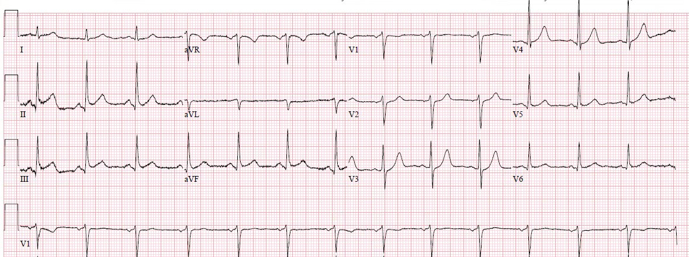
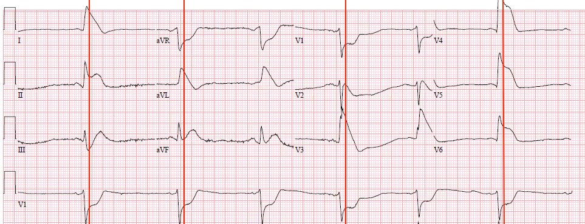
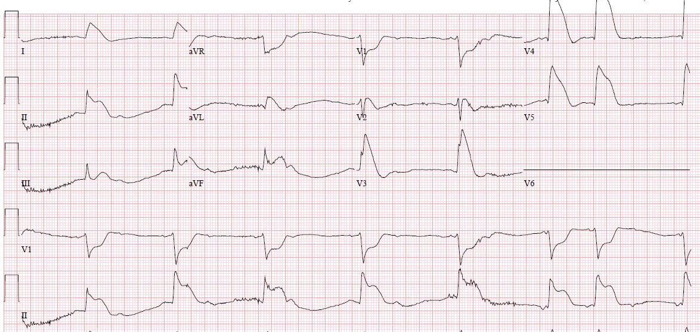
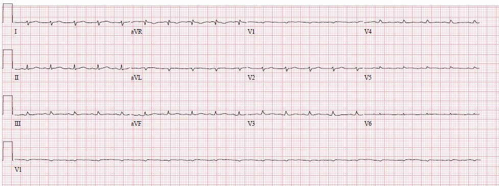
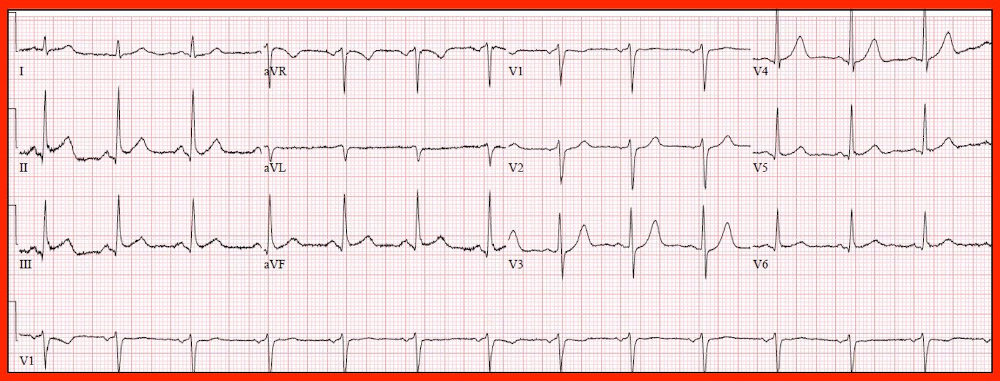

30/08/2018 — Nhật thực toàn phần của trái tim (Total Eclipse of the Heart)
Bản dịch tiếng Việt của bài "Total eclipse of the heart" – Dr. Smith’s ECG Blog. Giữ nguyên toàn bộ 8 hình ảnh của bản gốc.
Tác giả: Pendell Meyers
Một bệnh nhân nam cuối độ tuổi 50 đột ngột đau ngực lan sang bên trái và ra sau lưng, kèm buồn nôn, vã mồ hôi và cảm giác tê rần ở ngón tay hai bên. Ông tự lái xe đến khoa cấp cứu (ED).
Đây là điện tâm đồ lúc ông đến viện, lúc 11:33 sáng (không rõ cơn đau còn kéo dài vào thời điểm này hay đã giảm so với lúc khởi phát):


Có một chút ST chênh lên (STE) ở II, III và aVF, nhưng không có ST chênh xuống (STD) hay sóng T đảo ngược rõ ràng ở aVL. Có STD ở V2 và V3, điều này phải được coi là bất thường cho đến khi được chứng minh ngược lại bằng một điện tâm đồ nền. Sóng T ở V3 và V4 chưa chắc chắn là tối cấp, nhưng có thể là tối cấp nếu một điện tâm đồ nền cho thấy sóng T nền nhỏ hơn. Nếu đúng như vậy, thì sẽ có ST chênh xuống kèm sóng T tối cấp, tạo thành hình thái de Winter và đáng lo ngại về tắc hoặc gần tắc LAD ở vùng phân bố này. Nếu sóng T không tối cấp so với điện tâm đồ nền, thì chúng ta còn lại STD tối đa ở V2-V3, điều này đáng lo ngại về OMI thành sau. Nhưng đơn giản là nó trông không giống OMI thành sau.
Có vẻ như cơn đau của ông đã hết. Phòng thông tim (cath lab) không được kích hoạt vào thời điểm đó.
Khoảng 40 phút sau, ông đột ngột tái phát cơn đau ngực dữ dội như bị đè nghiến và trông có vẻ bệnh rất nặng.
Đây là điện tâm đồ của ông vào thời điểm đó, lúc 12:08:



STE ở V3-V6, I và aVL hàm ý một mạch máu rất lớn cấp máu cho cả thành trước và thành bên. STD ở V1 cho thấy có tổn thương thành sau. Đoạn ST ở V2 đẳng điện một cách khó xử, bị kéo xuống bởi tổn thương thành sau nhưng lại bị kéo lên bởi STE rất lớn của OMI thành trước vốn hiển nhiên từ chuyển đạo V3 trở đi. Chỉ riêng những dấu hiệu này đã cho thấy tắc một mạch máu rất lớn cấp máu cho các vùng của cả LAD và LCX gộp lại. Thế nhưng STE còn lan rộng hơn nữa, lan cả vào các chuyển đạo thành dưới.
Hãy chú ý điều đang xảy ra ở chuyển đạo aVR: do STE rất lớn, lan tỏa ở hầu như tất cả các chuyển đạo khác, aVR ghi nhận STD soi gương (reciprocal) rất lớn.
Nếu có bất kỳ điện tâm đồ nào trên blog này từng cho thấy bằng chứng của tắc thân chung động mạch vành trái hoàn toàn thực sự, thì đó chính là điện tâm đồ này.
Bất kể suy đoán về vị trí tổn thương là ở đâu, hình ảnh OMI với vùng chi phối khổng lồ này kèm nhịp chậm mới xuất hiện báo hiệu nguy cơ rất cao sắp ngừng tim.
Một điện tâm đồ khác được ghi 1 phút sau:


30 giây sau, bệnh nhân ngừng tim. Có vẻ như nhịp luân phiên giữa rung thất (VF) và “hoạt động điện vô mạch (PEA)”, với độ lệch đoạn ST khổng lồ kéo dài khi các cú sốc điện thành công trong thời gian ngắn.
Không thể duy trì ổn định tình trạng tái lập tuần hoàn tự nhiên (ROSC).
Khoa tim mạch không sẵn lòng đưa bệnh nhân vào phòng thông tim trong tình trạng này.
Bác sĩ phẫu thuật tim-lồng ngực được gọi đến tại giường để khởi động ECMO. Tuy nhiên, phẫu thuật viên đã quyết định đưa bệnh nhân vào phòng mổ trong khi vẫn tiếp tục hồi sinh tim phổi cơ học, để đặt cấp cứu thiết bị hỗ trợ thất trái (LVAD) (ca này không xảy ra gần đây, vì ngày nay ECMO sẽ là chiến lược được ưu tiên ở hầu hết các trung tâm).
Thật đáng kinh ngạc, việc đặt LVAD đã thành công và dòng máu hệ thống được khôi phục bằng cơ học.
Ông được chuyển ngay từ phòng mổ sang phòng thông tim để chụp mạch vành cấp cứu.
Chụp mạch vành cho thấy:
“…một huyết khối hình yên ngựa ở đoạn xa LMCA lan đến đoạn xa LAD và LCX, kèm bệnh lý đáng kể ở OM và cả ở RCA.”
Thân chung động mạch vành trái, LAD và LCX đều bị tắc nghẽn 95% bởi huyết khối hình yên ngựa vào thời điểm thông tim. Hợp lý khi kết luận rằng thân chung động mạch vành trái đã bị tắc hoàn toàn hoặc gần như hoàn toàn vào thời điểm ghi điện tâm đồ thứ hai ở trên.
“Đã thực hiện vài lượt hút bằng ống thông hút huyết khối, giúp cải thiện dòng máu. Đã nong bóng đơn thuần (POBA) cho OM, LMCA/LAD và LMCA/LCX. Sau khi thảo luận ca bệnh với Dr. _____, chúng tôi quyết định rằng vào lúc này không thể dùng bất kỳ loại stent nào vì bệnh nhân không phải là đối tượng phù hợp để điều trị kháng tiểu cầu (không dùng được aspirin hay thuốc ức chế P2Y12). Do đó kết quả thu được chưa tối ưu, nhưng đạt dòng chảy TIMI 3 ở tất cả các mạch. Chiến lược tái thông mạch cuối cùng sẽ được quyết định sau này tùy theo tình trạng của bệnh nhân.”
Troponin I đạt đỉnh 269,05 ng/mL (nhồi máu cơ tim cực kỳ lớn).
Đây là điện tâm đồ sau các can thiệp này:


Ông có tình trạng nền đáng kể, và gia đình tiếp tục theo đuổi các biện pháp điều trị tích cực. Ông trải qua một diễn biến rất sóng gió trong tháng tiếp theo tại đơn vị hồi sức tim mạch-lồng ngực (CTICU) và cuối cùng đã qua đời dù được điều trị tối đa.
Nếu chưa có bài viết nào khác của chúng tôi thuyết phục được bạn rằng STE ở aVR không biểu thị tắc thân chung động mạch vành trái, thì hãy để ví dụ này thuyết phục bạn!
Những điểm cần học:
Một bệnh nhân bị tắc thân chung động mạch vành trái thực sự thường sẽ ngừng tim rất sớm sau đó. Trừ một số ngoại lệ, chỉ trong một ca như ca này, khi bệnh nhân bị tắc thân chung ngay trước mặt nhân viên y tế, thì mới có thể ghi được điện tâm đồ đủ sớm trước khi ngừng tim để cho thấy các dấu hiệu điện tâm đồ của tắc thân chung động mạch vành trái.
ST chênh lên ở chuyển đạo aVR không có nghĩa là bệnh nhân bị tắc thân chung động mạch vành trái. Ca này cho thấy điều hoàn toàn ngược lại: aVR trong ca này cho thấy ST chênh xuống rất lớn vì nó phản ánh ST chênh lên rất lớn ở các chuyển đạo khác. Ngược lại, chuyển đạo aVR cho thấy ST chênh lên soi gương trong trường hợp thiếu máu cục bộ dưới nội tâm mạc lan tỏa do hẹp thân chung động mạch vành trái, với STD lan tỏa và STE soi gương ở aVR.
Xem các ca khác giải thích về chuyển đạo aVR và hội chứng vành cấp (ACS) do thân chung động mạch vành trái:
ST-Elevation in aVR with diffuse ST-Depression: An ECG pattern that you must know and understand! (ST chênh lên ở aVR kèm ST chênh xuống lan tỏa: một hình ảnh điện tâm đồ mà bạn phải biết và hiểu!)
Diffuse Subendocardial Ischemia on the ECG. Left main? 3-vessel disease? No! (Thiếu máu cục bộ dưới nội tâm mạc lan tỏa trên điện tâm đồ. Thân chung động mạch vành trái? Bệnh ba nhánh mạch vành? Không!)
ST Elevation in Lead aVR, with diffuse ST depression, does not represent left main occlusion (ST chênh lên ở chuyển đạo aVR, kèm ST chênh xuống lan tỏa, không biểu thị tắc thân chung động mạch vành trái)
Marked ST depression refractory to maximal medical therapy (ST chênh xuống rõ rệt, kháng trị với điều trị nội khoa tối đa)
Deep and widespread ST depression signifies high risk coronary lesion (ST chênh xuống sâu và lan rộng báo hiệu tổn thương mạch vành nguy cơ cao)
Probable Left Main coronary artery occlusion/obstruction, with STE in aVR, alternating BBB, and arrest (Nhiều khả năng tắc/tắc nghẽn thân chung động mạch vành trái, kèm STE ở aVR, blốc nhánh luân phiên và ngừng tim)

———————————————————–
Bình luận của KEN GRAUER, MD (1/9/2018):
———————————————————–
Phần bàn luận từng bước của Pendell Meyers thật xuất sắc, minh họa một cách thuyết phục các dấu hiệu điện tâm đồ của tắc cấp thân chung động mạch vành trái (mà theo Dr. Meyers, không bao gồm ST chênh lên ở aVR)! Tôi không có gì để bổ sung vào những lời lẽ uyên bác tuyệt vời của ông về việc suy luận động mạch “thủ phạm” chính trong ca này. Thay vào đó, tôi giới hạn bình luận của mình vào điện tâm đồ ban đầu — mà để cho rõ, tôi đặt lại ở Hình 1.


Dù từ điện tâm đồ thứ 2 (ghi 40 phút sau) đã hiển nhiên rằng một OMI cấp diện rộng đang diễn ra — thì vẫn RẤT DỄ bỏ sót những bất thường tinh tế có mặt trên bản ghi ban đầu ở Hình 1.
- Dr. Meyers đã ghi nhận một chút ST chênh lên ở mỗi chuyển đạo trong 3 chuyển đạo thành dưới, những chuyển đạo này cũng có sóng q nhỏ. Dù dễ có xu hướng quy những dấu hiệu này cho trục mặt phẳng trán tương đối đứng và cho “tái cực sớm” (nhất là khi không có ST-T chênh xuống soi gương ở chuyển đạo aVL) — trách nhiệm chứng minh thuộc về chúng ta là phải loại trừ (chứ không phải khẳng định) một biến cố tim cấp, vì bệnh nhân này đến khoa cấp cứu với đau ngực mới khởi phát. Theo ý kiến của tôi, KHÔNG thể đưa ra kết luận dứt khoát nào về khả năng có biến cố cấp chỉ dựa vào hình ảnh của các chuyển đạo chi ở Hình 1.
- Điểm chính mà Dr. Meyers nêu ra và tôi muốn nhấn mạnh — là các đoạn ST ở chuyển đạo V2 và V3 của Hình 1 không bình thường — và, đi kèm với ST chênh lên nhẹ thấy ở mỗi chuyển đạo trong 3 chuyển đạo thành dưới — dấu hiệu này phải (theo Dr. Meyers) được coi là bất thường cho đến khi được chứng minh ngược lại. Nói chung, trên một điện tâm đồ bình thường cần có ST chênh lên nhẹ ở chuyển đạo V2 và V3. Dù khó xác định chính xác “mức” ST chênh xuống ở các chuyển đạo này trong Hình 1 — hình dạng của các đoạn ST này “trông” chênh xuống, và ít nhất là rõ ràng thiếu đi kiểu ST chênh lên nhẹ dạng lõm hướng lên thường thấy.
Rõ ràng, những dấu hiệu tinh tế trên điện tâm đồ ban đầu ở Hình 1 không báo trước hay dự đoán được sự phân bố của các độ lệch sóng ST-T kịch tính xảy ra ngay sau đó. Chúng là hậu quả của bệnh lý RCA nặng đi kèm đã thấy khi thông tim, hay chỉ đơn thuần là những dấu hiệu bất thường ít thay đổi so với các bản ghi trước đó — thì không rõ. Nhưng, bên cạnh quá trình suy luận sâu sắc của Dr. Meyers để xác định sự hiện diện của tắc cấp thân chung động mạch vành trái — một Điểm cần học quan trọng không kém trong ca này là nhận ra được những bất thường điện tâm đồ tinh tế thấy ở Hình 1, mà trong bối cảnh đau ngực mới khởi phát thì rõ ràng là không “bình thường”.